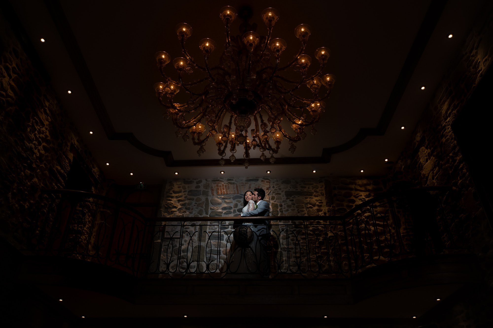
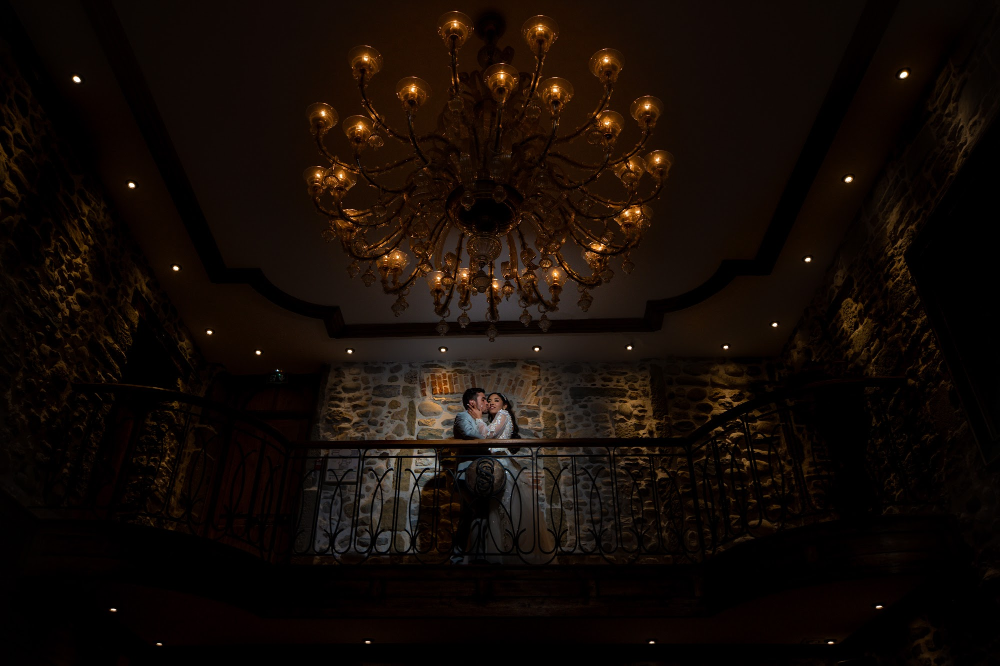

Photographe de salon professionnel à Lyon : immortaliser l'énergie de vos congrès
Sur un stand à Eurexpo ou au Centre de Congrès de Lyon, chaque interaction compte. Les mois de préparation, le design de l'espace et l'engagement de vos équipes méritent des images à la hauteur de vos enjeux. En tant que photographe de salon professionnel à Lyon, je capte l'animation de votre stand, la spontanéité des échanges commerciaux et le prestige de vos interventions sur scène.

Pourquoi engager un photographe de salon professionnel à Lyon ?
Un événement B2B passe à toute vitesse. Entre les rendez-vous clients qui s'enchaînent, la présentation des nouveautés et les conférences, l'équipe sur place n'a pas le temps d'immortaliser le travail accompli. Réaliser quelques clichés improvisés avec un smartphone ne rend jamais hommage au soin apporté à votre architecture de stand.
Faire appel à un photographe de salon professionnel à Lyon garantit un reportage complet et immédiatement exploitable pour votre communication d'entreprise. Qu'il s'agisse d'alimenter votre fil LinkedIn en direct, d'illustrer votre bilan annuel ou d'envoyer des visuels à la presse spécialisée, des images soignées renforcent votre image de marque auprès de vos partenaires.

Valoriser l'architecture de votre stand et l'ambiance générale
Avant l'ouverture des portes et l'arrivée des premiers visiteurs, je prends le temps de photographier votre espace sous tous ses angles. Le design global, la signalétique, les présentoirs de produits et la scénographie méritent une attention particulière quand le stand est encore parfait et immaculé.
Une fois la foule arrivée à Eurexpo Lyon ou au Palais de la Bourse, la perspective change. Je cherche à retranscrire l'affluence, la fluidité des passages et l'attractivité de votre enseigne au milieu de la grande halle d'exposition.

Capturer les échanges humains et la dynamique de vos équipes
Un salon est avant tout une aventure humaine. Les poignées de main chaleureuses, la démonstration captivante d'un produit, les sourires partagés autour d'une tasse de café : ce sont ces détails vivants qui donnent de l'âme à votre reportage.
Mon approche repose sur la discrétion. Je me déplace autour du stand sans rompre le fil des discussions professionnelles. Cette immersion me permet de saisir des expressions naturelles, sans posture figée, traduisant le dynamisme et l'accueil de vos collaborateurs.

Couvrir les conférences, tables rondes et keynotes
Les salons professionnels s'accompagnent souvent d'un programme dense de prises de parole. Qu'il s'agisse d'une keynote d'ouverture sur une grande scène ou d'un atelier plus intime, la gestion de la lumière y est décisive.
Entre les écrans LED fluorescents, les projecteurs de scène et la faible luminosité ambiante, les conditions techniques sont exigeantes. J'utilise un équipement adapté aux lumières complexes pour offrir des portraits nets de vos intervenants, captant l'assurance du regard et la force de leur discours.

La vidéo événementielle pour amplifier votre impact sur les réseaux
En complément de la photographie, la création d'une capsule vidéo courte apporte une puissance visuelle inégalée pour vos canaux digitaux. Un film d'une minute synthétisant l'ambiance de votre journée offre à vos prospects qui n'ont pas pu faire le déplacement un aperçu direct de votre présence.
Rythmé, élégant et habillé de votre charte graphique, cet aftermovie de salon devient un outil marketing prêt à l'emploi pour remercier vos visiteurs et annoncer vos prochains rendez-vous en Rhône-Alpes ou ailleurs.

Une organisation rigoureuse adaptée aux exigences corporate

Le monde de l'événementiel d'entreprise impose une réactivité sans faille. En amont du salon, nous établissons ensemble un cahier des charges clair : moments clés à ne pas rater, personnalités VIP à photographier et livrables prioritaires.
Si vos équipes de communication ont besoin de visuels pendant l'événement pour publier sur les réseaux sociaux, je propose la livraison d'une sélection de photos retouchées dans les heures qui suivent la prise de vue.
Questions fréquentes
Sur quels lieux de salon intervenez-vous à Lyon et aux alentours ?
J'interviens régulièrement sur tous les sites majeurs de la région comme Eurexpo Lyon, le Centre de Congrès de la Cité Internationale, le Palais de la Bourse, mais aussi dans l'Ain, l'Isère et toute la région Auvergne-Rhône-Alpes.
Combien de temps à l'avance faut-il réserver la couverture d'un salon ?
Les périodes de salons professionnels étant très concentrées au printemps et à l'automne, il est conseillé de bloquer la date plusieurs semaines à l'avance dès que votre numéro de stand est confirmé.
Proposez-vous la livraison de photos le jour même pour LinkedIn ?
Oui, je peux transférer une sélection de visuels optimisés et retouchés en temps réel ou à la fin de la journée pour répondre aux impératifs de votre communication en direct.
Réalisez-vous également la vidéo de notre stand de salon ?
Tout à fait. Je propose une couverture combinée photo et vidéo pour réaliser un teaser dynamique ou des capsules courtes adaptées aux formats verticaux des réseaux sociaux.
Un projet de salon professionnel ou de congrès à Lyon ? Échangeons dès aujourd'hui sur vos besoins d'images.
Parlons de votre projet